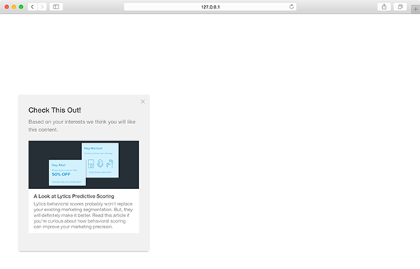

A slideout is a medium module which slides from either side into the window. This module provides a good amount of space for text and content without taking the full attention of the user.
position
Positition of the slideout module relative to the browser window.
position string |
|
| Value | Behavior |
|---|---|
| bottom-left | default display the module in the bottom left corner of the window |
| bottom-right | display the module in the bottom right corner of the window |
Positions - Live Preview

origin
Origin is the direction from which the the module will slide in.
origin string |
|
| Value | Behavior |
|---|---|
| left | default for bottom-left positioned modules |
| right | default for bottom-right positioned modules |
| bottom | module slides up from the bottom of the window |
Bottom - Live Preview
variant
Variant determines any extra content that may be used by the module.
variant int |
|
| Value | Behavior |
|---|---|
| 1 | default text-only-module |
| 2 | module includes an image |
| 3 | module includes a content recommendation |
image
Define the featured image you would like to use for the module.
Note: This setting is only valid for modules with a variant value of 2.
| Key | Type | Behavior |
|---|---|---|
| image | string | URL of the image to feature |
Image (variant 2) - Live Preview

recommend
Recommend controls any parameters necessary for making a content suggestions to a user using the Lytics content recommendation API. Your Lytics account ID must be present in the call to initializeWidgets for content recommendation modules.
Note: This setting is only valid for message modules with a variant value of 3.
recommend object |
||
| Key | Type | Behavior |
|---|---|---|
| ql | string | formatted query to filter based on url, topic or other content variables* |
*Currently Pathfora supports a beta version of content recommendation, that is, suggesting content on a user-level based on their content affinity. If you would like to try out this feature please contact your customer success representative success@lytics.io to help set this up.
content
Content acts as a backfill/helper for the recommend key. If the content recommendation API cannot return a recommendation for the user (if they don't have any content affinity data or an error occurs), a default document may be provided.
object in content array |
||
| Key | Type | Behavior |
|---|---|---|
| url | string | url of the default document to recommend to the user |
| title | string | meta title of the default document |
| description | string | meta description of the default document |
| image | string | url of the meta image of the default document |
| default | boolean | required true if the content provided is to be used should the recommendation fail |
Content Recommendation (variant 3) - Live Preview
Note: The example will show the default content in this case since a valid account ID is not provided.
